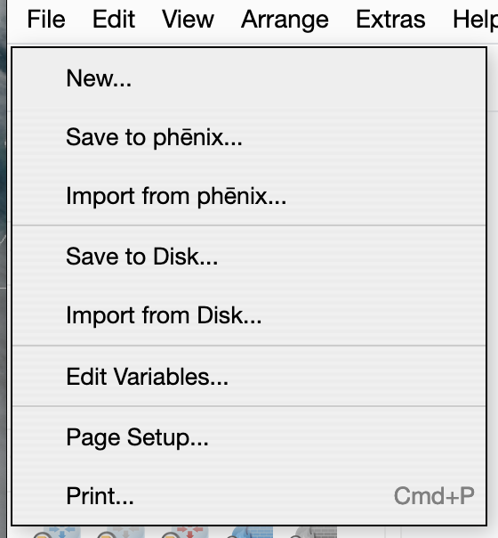

Configuration Files¶
phenix currently supports six (6) different configuration file types:
Typically, users will create Topology and Scenario configuration files by
hand, while the rest will be generated by phenix using available commands.
However, it is possible to create all configuration file types by hand if
necessary.
Note
Configuration files can also be created, viewed, and deleted via the Web-UI (see Web-UI section below).
Configuration files are versioned using a header section based heavily on what Kubernetes does. Each configuration file will have a header section that looks like the following:
In the example above, the kind field represents the type of configuration file
(e.g., Topology, Scenario, Image). The apiVersion field represents the
version the spec section conforms to (currently there is only v1 for all
configuration types except Scenario, which is v2), and the spec section
will contain the actual details for the configuration type based on the
configuration schema. Note that, at least in the header section, keys are
camel-case and begin with a lowercase letter, while values are camel-cased but
begin with a capital letter.
Note
Throughout the documentation, we mention creating configurations manually.
When we say this, we mean passing a YAML or JSON configuration file of any
type to the phenix config create command.
Topology¶
The Topology configuration is one of the core configuration types for
phenix, as it describes a network topology to be deployed in minimega that
can be used by one or more experiments to be executed.
A topology is comprised of one or more nodes, which can either be a VM
(external: false - the default) or an external node (external: true), each
including system descriptions and configurations, as well as any networking
settings required to connect all of the nodes in a topology together. This
configuration becomes the basis for most of the minimega commands later created
in the relevant minimega startup script (at least for internal VMs).
Default Settings¶
If left unmodified or unset, the following are the default settings for each node:
- external will be set to
false - memory will be set to
512MB - vcpus will be set to
1 - snapshot will be set to
true - no network settings will be included
Required Values¶
Each topology must have a unique name, which should be lowercase and not include spaces. In addition, each node in the topology must:
- have a specified type — the available types are defined in the schema
- have a unique hostname
- have an OS type of
linuxorwindows - have a disk image assigned
Optional Values¶
Optional values for a node in the topology configuration can include:
- static network configurations
- specific memory values (e.g.,
1-16GB) - specific VCPUs values (e.g.,
1-4) - additional disk storage
- file injections
- labels, which are typically used by phēnix apps
- routing ruleset(s)
- delay triggered by
user,time, orc2(command and control)
Delay Start¶
It is possible to delay the start of a VM with the delay value. There are
three options available to set, but on only one option can be set:
-
useris a boolean value and when set totruethe VM will require a manual start either through the phēnix UI or command line (the latter can be by phēnix or minimega commands). -
timeis a string that is set as a delay in minutes; e.g.,5m. -
c2requires minimega command and control. Note in the example below that the hostnameAD1will be delayed starting until the VMhost-00has started and checked in with minimega command and control. It is possible to have multiple hostnames included.useUUIDis an additional boolean value setting, per hostname, that will watch for the UUID instead of the hostname to register with minimega command and control.
Note
If one or more VMs are set with a delayed start, the UI will display a blue tag in the Delay column next to the Screenshot column. The tag will indicate what type of dealy was set. Once all the delayed VMs have started, the Delay column will no longer be visible.
Network Address Translation (NAT)¶
For nodes of type Router, basic source NAT can be configured to masquerade
packets from one or more networks out a specific interface. For example, assume
a router has three interfaces — eth0, eth1, eth2. eth0 is connected to
the Internet, while eth1, eth2 are connected to networks that use private IP
space. To masquerade packets from eth1, eth2 out eth0 the following
configuration could be used.
External Nodes¶
There may be cases where an experiment includes external devices (hardware in
the loop) that should still be included in the topology for the purposes of the
State of Health network diagram, state of health
reachability checks, or for use by custom user apps. External nodes can be
included in the topology by marking them as external: true. Among other
things, this will prevent them from being deployed as a VM in minimega. The
configuration schema for an external node in the topology is defined
here.
Warning
Do not use external: false for internal nodes that should be deployed in
minimega. Instead, don't include the external configuration key at all.
This is a quirk of how we internally decide which node schema should be used
(via oneOf).
Example¶
A contrived, four node example — three VMs and a router — is given below, and is driven by the topology schema described here.
apiVersion: phenix.sandia.gov/v1
kind: Topology
metadata:
name: foobar
spec:
nodes:
- type: VirtualMachine
general:
hostname: host-00
snapshot: true
delay:
user: true
hardware:
os_type: linux
drives:
- image: ubuntu.qc2
injections:
- src: foo/bar/sucka.fish
dst: /data/sucka.fish
- src: /foo/bar/sucka/fish.sh
dst: /data/fish.sh
network:
interfaces:
- name: IF0
vlan: EXP-1
address: 192.168.10.1
mask: 24
gateway: 192.168.10.254
proto: static
type: ethernet
- name: IF1
vlan: MGMT
address: 172.16.10.1
mask: 16
proto: static
type: ethernet
- type: VirtualMachine
general:
hostname: host-01
snapshot: true
do_not_boot: false
delay:
time: 5m
hardware:
os_type: linux
drives:
- image: ubuntu.qc2
network:
interfaces:
- name: IF0
vlan: EXP-1
address: 192.168.10.2
mask: 24
gateway: 192.168.10.254
proto: static
type: ethernet
- name: IF1
vlan: MGMT
address: 172.16.10.2
mask: 16
proto: static
type: ethernet
- name: S0
vlan: EXT
address: 10.0.0.1
mask: 24
proto: static
type: serial
udp_port: 8989
baud_rate: 9600
device: /dev/ttyS0
- type: VirtualMachine
general:
hostname: AD1
snapshot: true
delay:
c2:
- hostname: host-00
useUUID: false
hardware:
os_type: windows
drives:
- image: win-svr-2k8.qc2
network:
interfaces:
- name: IF0
vlan: EXP-1
address: 192.168.10.250
mask: 24
gateway: 192.168.10.254
proto: static
type: ethernet
- name: IF1
vlan: MGMT
address: 172.16.10.3
mask: 16
proto: static
type: ethernet
- type: Router
labels:
ntp-server: "true"
general:
hostname: router-00
snapshot: true
hardware:
os_type: linux
drives:
- image: vyatta.qc2
network:
interfaces:
- name: IF0
vlan: EXP-1
address: 192.168.10.254
mask: 24
proto: static
type: ethernet
ruleset_in: test
- name: IF1
vlan: MGMT
address: 172.16.10.254
mask: 16
proto: static
type: ethernet
rulesets:
- name: test
default: drop
rules:
- id: 10
action: accept
protocol: all
source:
address: 1.1.1.1
port: 53
Scenario¶
The Scenario configuration is used to define and configure one or more
phenix apps (default or user) for
use with a topology. In this sense, a topology can have one or more scenarios
associated with it, but a scenario can only be associated with a single
topology.
Apps¶
A phenix app can be applied to an experiment topology using a single
configuration, a per-host configuration, or both. Examples could include:
- a
phenixapp that adds a minimega tap to all hosts in the cluster, - one that injects the same file into every node in the experiment topology, or
- one that configures a VPN between two nodes in an experiment using WireGuard.
The first two examples would involve a single configuration, while the last example would use a per-host configuration because (1) only two nodes will be modified, and (2) each of the two nodes will require different configurations (e.g., one will be a WireGuard client and the other a WireGuard server). Each configured app can contain a list of topology nodes to apply the app to, along with custom metadata for the app specific to the topology node.
App Configuration Options¶
-
assetDir: used by apps to generate absolute path to asset files when relative paths are provided in app metadata. The default is an empty string. -
fromScenario: name of another scenario config to pull this app config from. This allows for defining complex app configurations in a single base scenario and referencing it from scenarios included in experiments. The default is an empty string. -
hosts: a list of per-host configurations to apply to the experiment topology. The default isnil.-
hostname: the name of the experiment VM to apply this per-host metadata to. -
metadata: app metadata to apply to this experiment VM. The default isnil.
-
-
metadata: app metadata to apply to this experiment. The default isnil. -
name: the name of the app being configured. There is no default value; one must be provided. -
runPeriodically: a Golang duration string specifying how often to trigger the app's running stage. The default value is an empty string, which means the app's running stage will not be triggered periodically.
Example¶
The following is an example of a configuration for a scenario named foobar,
which can only be applied to an accompanying topology named foobar (while
these names are the same in this example, the topology and scenario names do not
have to match). Included in this scenario are apps named miniccc-injector,
startup, protonuke, and wireguard. Each entry in the list of app hosts
includes custom app metadata and the hostname of the topology node to apply the
metadata.
apiVersion: phenix.sandia.gov/v1
kind: Scenario
metadata:
name: foobar
annotations:
topology: foobar
spec:
apps:
- name: miniccc-injector
metadata:
# files to inject into each node in experiment, based on OS type
linux:
src: /phenix/injects/miniccc
dst: /usr/local/bin/miniccc
windows:
src: /phenix/injects/miniccc.exe
dst: phenix/miniccc.exe
- name: startup
hosts:
- hostname: host-00 # hostname of topology node to apply it to
metadata:
domain_controller:
domain: example.com
ip: 10.0.0.1
username: admin
password: SuperSecretPassword
- name: protonuke
hosts:
- hostname: host-01 # hostname of topology node to apply it to
metadata:
# protonuke app metadata for this topology node
args: -logfile /var/log/protonuke.log -level debug -http -https -smtp -ssh 192.168.100.100
- name: wireguard
hosts:
- hostname: AD1 # hostname of topology node to apply it to
metadata:
# wireguard app metadata for this topology node
infrastructure:
private_key: GLlxWJom8cQViGHojqOUShWIZG7IsSX8
address: 10.255.255.1/24
listen_port: 51820
peers:
public_key: +joyya2F9g72qbKBtPDn00mIevG1j1OqeN76ylFLsiE=
allowed_ips: 10.255.255.10/32
Note
The above example includes an app named startup, which is a phēnix
default app. Meaning, it is possible to configure default phēnix apps in a
scenario configuration, not just user apps.
Note
See Scorch for additional information on Scenario Orchestration
Experiment¶
Experiment configurations represent the combination of topologies and
scenarios to form an experiment (it should be note that an experiments do not
require a scenario).
Typically experiment configurations are
created automatically, but it is
possible to create them manually using a configuration file similar to the one
shown below. In this case, an experiment named foobar would be created based
on an existing topology named foobar and an existing scenario named foobar
(note that none of the names are required to match).
apiVersion: phenix.sandia.gov/v1
kind: Experiment
metadata:
name: foobar
annotations:
topology: foobar # this is required
scenario: foobar # this is optional
Once created, either manually or automatically, the experiment configuration will be expanded to have the topology and scenario configurations embedded in it, as well as additional details like cluster host schedules for VMs, VLAN ranges, Builder XML, etc. The advantage of embedding the topology and scenario into the experiment is that they can be modified in the experiment without modifying the originals.
Image¶
The Image configuration is used to generate VM disk images using a custom
version of vmdb2. Representing a disk
image in a configuration like this allows for the same disk image to easily be
built in different clusters without having to actually move large disk image
files.
Note
The phēnix image capability will only generation Linux based images. It will not generate Windows disk images.
Typically image configurations are
created automatically by the
phenix image create command, but users can also create them manually using a
configuration file similar to the one shown below. This file can then be created
in the phēnix store using the phenix cfg create <path-to-file> command.
apiVersion: phenix.sandia.gov/v1
kind: Image
metadata:
name: foobar
spec:
format: qcow2
mirror: http://us.archive.ubuntu.com/ubuntu/
overlay: []
packages:
- initramfs-tools
- net-tools
- isc-dhcp-client
- openssh-server
- init
- iputils-ping
- vim
- less
- netbase
- curl
- ifupdown
- dbus
- linux-image-generic
- linux-headers-generic
release: bionic
size: 5G
variant: minbase
scripts:
POSTBUILD_APT_CLEANUP: |
apt clean || apt-get clean || echo "unable to clean apt cache"
POSTBUILD_NO_ROOT_PASSWD: |
sed -i 's/nullok_secure/nullok/' /etc/pam.d/common-auth
sed -i 's/#PermitRootLogin prohibit-password/PermitRootLogin yes/' /etc/ssh/sshd_config
sed -i 's/#PermitEmptyPasswords no/PermitEmptyPasswords yes/' /etc/ssh/sshd_config
sed -i 's/PermitRootLogin prohibit-password/PermitRootLogin yes/' /etc/ssh/sshd_config
sed -i 's/PermitEmptyPasswords no/PermitEmptyPasswords yes/' /etc/ssh/sshd_config
passwd -d root
Note
If no overlay is used in the image configuration, an empty array must be provided
User¶
The User configuration tracks phēnix UI user settings (e.g., username,
password, and RBAC permissions). Typically user configurations are created
automatically when a UI admin creates a new user via the UI, but they can also
be created manually using a configuration file similar to the one shown below.
apiVersion: phenix.sandia.gov/v1
kind: User
metadata:
name: admin@foo.com
spec:
username: admin@foo.com
first_name: Admin
last_name: Istrator
password: ****************
rbac:
roleName: Global Admin
policies:
- resourceNames:
- '*'
resources:
- '*'
- '*/*'
verbs:
- '*'
- resourceNames:
- admin@foo.com
resources:
- users
verbs:
- get
Role¶
The Role configuration is used to represent a named set of RBAC permissions
that represent a user's role in the UI. When a new user is created, the role
that user should have is specified, and using that role name the appropriate
RBAC permissions are copied from the role configuration into the user
configuration.
There are six (6) default role configurations that get created automatically, and are described here. An example role configuration is shown below for completeness.
apiVersion: phenix.sandia.gov/v1
kind: Role
metadata:
name: global-admin
spec:
roleName: Global Admin
policies:
- resourceNames:
- '*'
resources:
- '*'
- '*/*'
verbs:
- '*'
Web-UI¶
Config Table¶
The Configs component will initially load with a table presenting all the
available configuration files. It is possible to filter in two ways:
- There is a pull-down selector, which will allow filtering on a specific
Kindof config; and,

- A filter field will allow filtering on
Name(if you have filtered onKind, it will be limited to that kind of config).

Clicking on the X next to the Find a Config field will reset both filters.
View a Config¶
There are two ways to view a specific config:
- Clicking the name of the config entry will open a modal to view the config.
It is possible to select text and copy from this modal. However, it is not
possible to edit the config directly in this view. Instead, there is an
Edit Configbutton, which will open an editor. It is also possible to download a copy of the config.

- Selecting the
Editbutton for a given config will open the editor window. It is possible to edit the config in this window and save the update to the phēnix store. The config will be validated against the schema, and if invalid, an error will be presented.

Create a Config¶
There are two ways to create a new config:
- Selecting the
Uploadbutton located to the far right of the search field will allow you to upload a file from disk. It is possible to drag and drop in the upload modal or click the upload icon to open a file browser.
Note
Only files with the extensions .yml, .yaml, and .json will be allowed.
Any file uploaded will be validated against the schema for a given kind of
config, and if invalid, an error will be presented.

- Clicking the
+button next to the search field will present an editor window where it is possible to create a new file in place. A basic template is provided based on the kind of config selected (see next section for documentation on the editor window features). Once editing a config is completed, clicking theCreatebutton will post it server-side where it will be validated, similar to file upload. If invalid, an error will be presented.

Editor Window¶
The editor window allows direct editing of an existing or new config file.
-
It is possible to edit a file as YAML or JSON by selecting the relevant radio button under
File Format. -
It is also possible to set keybindings to the Vim editor by enabling them with the sliding selector under
Vim Keybindings.

New Config¶
The editor window for creating a new config will allow editing the filename in a text field to the left or within the config editor directly. Similarly, use the pull-down selector to the left to select the kind of config or within the config editor.

Selecting the Create button will post the new config server-side for
validation and addition to the store. Choosing the Exit button will leave the
editor window; nothing will be saved.
Existing Config¶
Changing the name in an existing config is only available through the editor window.

Selecting the Save button will post any updates server-side for validation and
addition to the store. Selecting the Exit button will leave the editor window;
nothing will be saved.
Delete a Config¶
Selecting the delete icon will delete a config. A confirmation dialog will be
presented to confirm the selection. Once the config is deleted, it cannot be
restored to the store. If an experiment config is deleted, the corresponding
experiment will not longer be presented in the Experiments tab.

Builder¶
The Builder app is an external app that allows users to generate either topology
or experiment configuration using a graphical interface. It is based on the
minibuilder app in minimega. Users can access the Builder app via the
Builder tab in the phēnix UI.
Creating or Editing a Topology¶
When Builder opens, it does so in a new configuration. If a user wanted to open an existing configuration, they are available in the File menu through the Import from phēnix or Import from Disk selections.
A user can add VM hosts or networking components by selecting the relevant image on the left side of the Builder canvas.

Each time a configuration is saved to phēnix, it is available to select from Import from phēnix in the File menu. A configuration created in Builder can only be edited while in the Builder app. There are two options for editing an existing configuration created in Builder.

-
Select Import from phēnix in Builder — make any changes and then add to phēnix with a new name
-
Select Import from phēnix in Builder — make any changes and then add to phēnix with the same name; this will overwrite the configuration that was selected to import
Note
Any hosts added to a topology will not have a drive image name; this is a requirement and will need to be included in each node added to the Builder canvas.

Other values will be auto-generated but can be customized by clicking on a target node and making changes in the dialogue presented in the Builder UI. It is worth noting that a user can set a single node value and then copy and paste that node multiple times; the customized values will be extended to each node that is pasted in the Builder canvas.
While scenarios are not a part of the Builder environment, a user can add them to a topology. When a user selects Save to phēnix, a pulldown will be presented with available scenarios from the phēnix store.

When a scenario is selected, Builder will write the topology configuration to the phēnix store and an experiment configuration. When a scenario is not specified, the Builder app will save the topology configuration only. The user will then need to create an experiment in the phēnix UI.